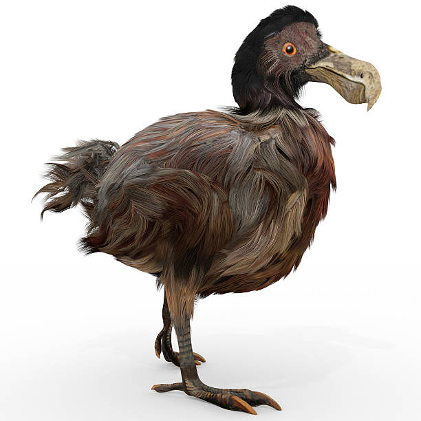
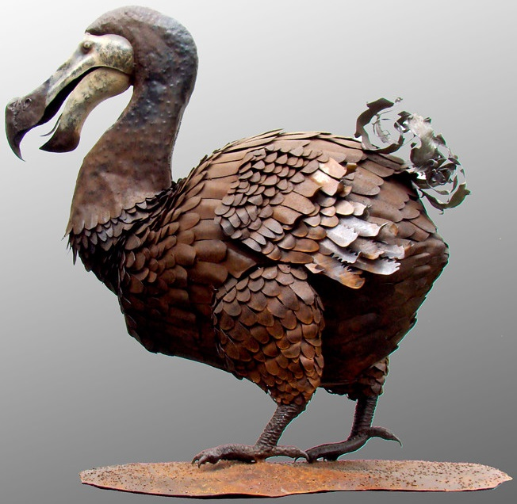
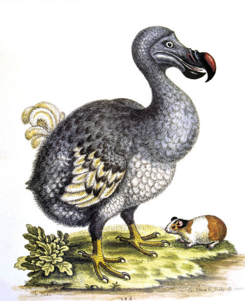
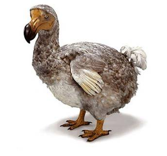

The dodo (Raphus cucullatus) is an extinct flightless bird that was endemic to the island of Mauritius, which is east of Madagascar in the Indian Ocean. The dodo's closest genetic relative was the also-extinct Rodrigues solitaire. The two formed the subfamily Raphinae, a clade of extinct flightless birds that were a part of the family which includes pigeons and doves. The closest living relative of the dodo is the Nicobar pigeon. A white dodo was once thought to have existed on the nearby island of Réunion, but it is now believed that this assumption was merely confusion based on the also-extinct Réunion ibis and paintings of white dodos.
Subfossil remains show the dodo was about 1 metre (3 ft 3 in) tall and may have weighed 10.6–17.5 kg (23–39 lb) in the wild. The dodo's appearance in life is evidenced only by drawings, paintings, and written accounts from the 17th century. Since these portraits vary considerably, and since only some of the illustrations are known to have been drawn from live specimens, the dodos' exact appearance in life remains unresolved, and little is known about its behaviour. It has been depicted with brownish-grey plumage, yellow feet, a tuft of tail feathers, a grey, naked head, and a black, yellow, and green beak. It used gizzard stones to help digest its food, which is thought to have included fruits, and its main habitat is believed to have been the woods in the drier coastal areas of Mauritius. One account states its clutch consisted of a single egg. It is presumed that the dodo became flightless because of the ready availability of abundant food sources and a relative absence of predators on Mauritius. Though the dodo has historically been portrayed as being fat and clumsy, it is now thought to have been well-adapted for its ecosystem.
The first recorded mention of the dodo was by Dutch sailors in 1598. In the following years, the bird was hunted by sailors and invasive species, while its habitat was being destroyed. The last widely accepted sighting of a dodo was in 1662. Its extinction was not immediately noticed, and some considered it to be a myth. In the 19th century, research was conducted on a small quantity of remains of four specimens that had been brought to Europe in the early 17th century. Among these is a dried head, the only soft tissue of the dodo that remains today. Since then, a large amount of subfossil material has been collected on Mauritius, mostly from the Mare aux Songes swamp. The extinction of the dodo within less than a century of its discovery called attention to the previously unrecognised problem of human involvement in the disappearance of entire species. The dodo achieved widespread recognition from its role in the story of Alice's Adventures in Wonderland, and it has since become a fixture in popular culture, often as a symbol of extinction and obsolescence.
 The dodo was variously declared a small ostrich, a rail, an albatross, or a vulture, by early scientists. In 1842, Danish zoologist Johannes Theodor Reinhardt proposed that dodos were ground pigeons, based on studies of a dodo skull he had discovered in the collection of the Natural History Museum of Denmark. This view was met with ridicule, but was later supported by English naturalists Hugh Edwin Strickland and Alexander Gordon Melville in their 1848 monograph The Dodo and Its Kindred, which attempted to separate myth from reality. After dissecting the preserved head and foot of the specimen at the Oxford University Museum and comparing it with the few remains then available of the extinct Rodrigues solitaire (Pezophaps solitaria) they concluded that the two were closely related. Strickland stated that although not identical, these birds shared many distinguishing features of the leg bones, otherwise known only in pigeons.
Strickland and Melville established that the dodo was anatomically similar to pigeons in many features. They pointed to the very short keratinous portion of the beak, with its long, slender, naked basal part. Other pigeons also have bare skin around their eyes, almost reaching their beak, as in dodos. The forehead was high in relation to the beak, and the nostril was located low on the middle of the beak and surrounded by skin, a combination of features shared only with pigeons. The legs of the dodo were generally more similar to those of terrestrial pigeons than of other birds, both in their scales and in their skeletal features. Depictions of the large crop hinted at a relationship with pigeons, in which this feature is more developed than in other birds. Pigeons generally have very small clutches, and the dodo is said to have laid a single egg. Like pigeons, the dodo lacked the vomer and septum of the nostrils, and it shared details in the mandible, the zygomatic bone, the palate, and the hallux. The dodo differed from other pigeons mainly in the small size of the wings and the large size of the beak in proportion to the rest of the cranium.
Throughout the 19th century, several species were classified as congeneric with the dodo, including the Rodrigues solitaire and the Réunion solitaire, as Didus solitarius and Raphus solitarius, respectively (Didus and Raphus being names for the dodo genus used by different authors of the time). An atypical 17th-century description of a dodo and bones found on Rodrigues, now known to have belonged to the Rodrigues solitaire, led Abraham Dee Bartlett to name a new species, Didus nazarenus, in 1852. Based on solitaire remains, it is now a synonym of that species. Crude drawings of the red rail of Mauritius were also misinterpreted as dodo species; Didus broeckii and Didus herberti.
For many years the dodo and the Rodrigues solitaire were placed in a family of their own, the Raphidae (formerly Dididae), because their exact relationships with other pigeons were unresolved. Each was also placed in its own monotypic family (Raphidae and Pezophapidae, respectively), as it was thought that they had evolved their similarities independently. Osteological and DNA analysis has since led to the dissolution of the family Raphidae, and the dodo and solitaire are now placed in their own subfamily, Raphinae, within the family Columbidae.
 In 2002, American geneticist Beth Shapiro and colleagues analysed the DNA of the dodo for the first time. Comparison of mitochondrial cytochrome b and 12S rRNA sequences isolated from a tarsal of the Oxford specimen and a femur of a Rodrigues solitaire confirmed their close relationship and their placement within the Columbidae. The genetic evidence was interpreted as showing the Southeast Asian Nicobar pigeon (Caloenas nicobarica) to be their closest living relative, followed by the crowned pigeons (Goura) of New Guinea, and the superficially dodo-like tooth-billed pigeon (Didunculus strigirostris) from Samoa (its scientific name refers to its dodo-like beak). This clade consists of generally ground-dwelling island endemic pigeons. The following cladogram shows the dodo's closest relationships within the Columbidae, based on Shapiro et al., 2002.